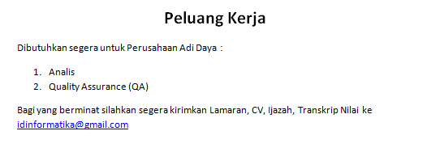
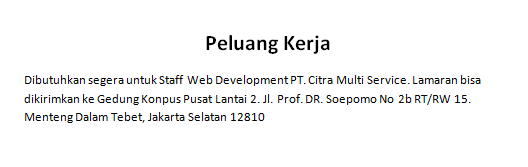

Fakultas Teknik Universitas SuryaKanca
info@ftunsur.ac.id
(0263) 283578
FAKULTAS TEKNIK
Menu
Beranda
Profil
Sambutan
Program Studi
Teknik Industri
Teknik Informatika
Teknik Sipil
E Dokumen
Berita
Pedoman Akademik
Login
Informasi Terbaru
Jadwal Ujian Tengah Semester (UTS) Genap T.A 2018-2019
Jadwal Pelaksanaan Sidang Tugas Akhir Periode Bulan Februari 2019 T.A 2018-2019
Jadwal Seminar Tugas Akhir Periode Bulan Januari T.A 2018-2019
Jadwal Pelaksaan Seminar Kerja Praktek Periode Januari 2019
Informasi Lowongan Kerja

